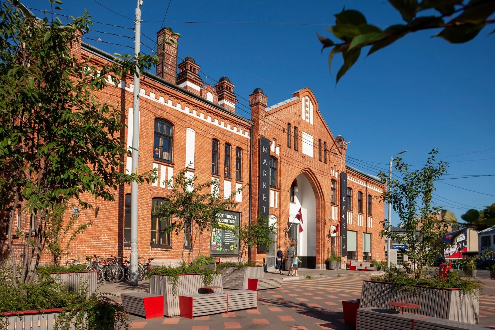

Āgenskalna tirgus 
Āgenskalna tirgus
- Āgenskalna tirgus ir tirdzniecības vieta Āgenskalnā, kas atrodas Nometņu ielā 64 Rīgā.
Āgenskalna tirgus vēsture
- Sākotnēji Āgenskalna tirgus atradās Sētas kroga pagalmā, bet vēlāk to pārcēla uz Kalnciema un Sētas ielas stūri. 1893. gadā Rīgas pilsētas valde vēlējās veco tirgu likvidēt un ierīkot jaunu lielākā laukumā. 1898. gada 1. janvārī to atvēra jaunā vietā. Šī jaunā vieta bija starp Nometņu, Zeļļu un Bāriņu ielām. Sākumā šo tirgu sauca par Grāvmuižas tirgu, jo tas atradās Grāvmuižas teritorijā. Paviljonu būvi uzsāka tikai 1911. gadā. Tirdzniecība paplašinājās 20. gadsimta sākumā, sakarā ar jaunā paviljona celtniecības pabeigšanu 1914. gadā. Āgenskalna tirgus paviljona projektu izstrādāja Rīgas pilsētas arhitekts Reinholds Šmēlings. Āgenskalna tirgus ēkai raksturīgs 20. gadsimta sākuma racionālais jūgendstils. Sākotnēji tirgošanās notika zem klajas debess un no tirgus būdām, aptuveni 2804 m² lielā platībā. Tirgošanas vietu īre pilsētai ienesa 1635 rubļu, 1905. gadā — 8100 rubļu lielu peļņu. 1988. gadā tirgošanās notika 8,3 tūkstošu m² lielā platībā. Tirgū pārdeva gaļas produktus, zivis, augļus, dārzeņus un citus produktus.
- 2018. gada janvārī Rīgas dome tirgus sliktā tehniskā stāvokļa dēļ to slēdza. Atklātā izsolē tiesības turpmākos 30 gadus saimniekot Āgenskalna tirgū un tam piegulošajā teritorijā ieguva Kalnciema kvartāla īpašnieki brāļi Kārlis un Mārtiņš Dambergi. 2018. gada 3. augustā Āgenskalna tirgus tika atkal atvērts.
- Covid-19 pandēmijas dēļ Āgenskalna tirgus remontdarbi aizkavējās un tirgus ēkas atklāšanu pārcēla uz 2022. gada aprīli, turpmākajos gados plānojot atjaunot arī āra tirdzniecības teritoriju. Tirgus atkal atvērts pēc rekonstrukcijas 2022. gada 7. maijā.